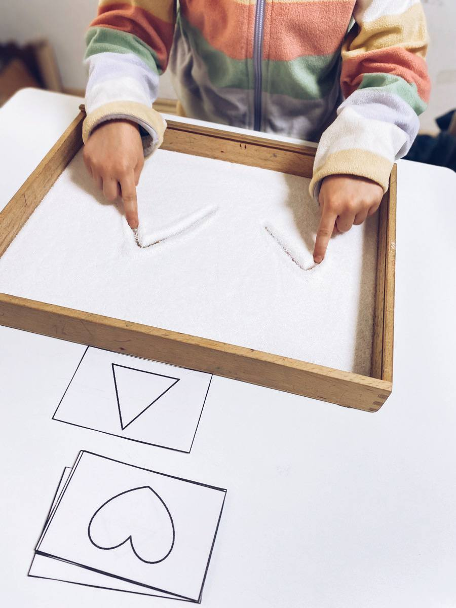
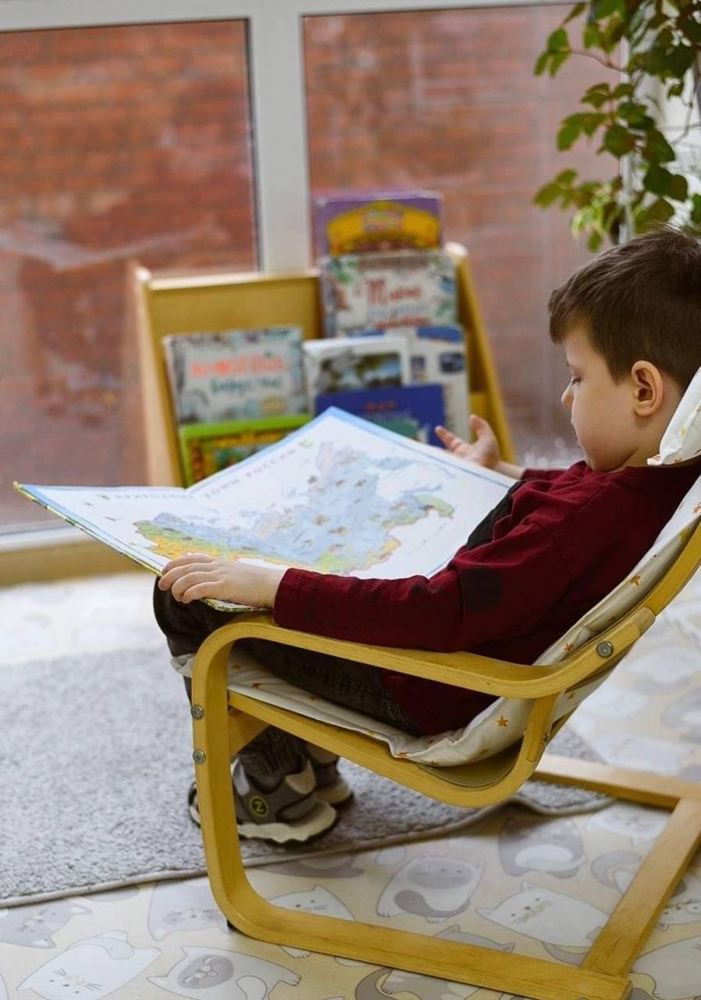
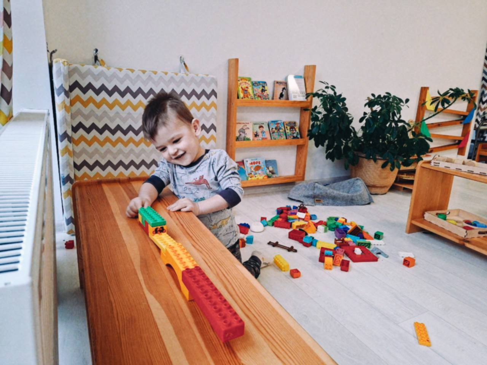
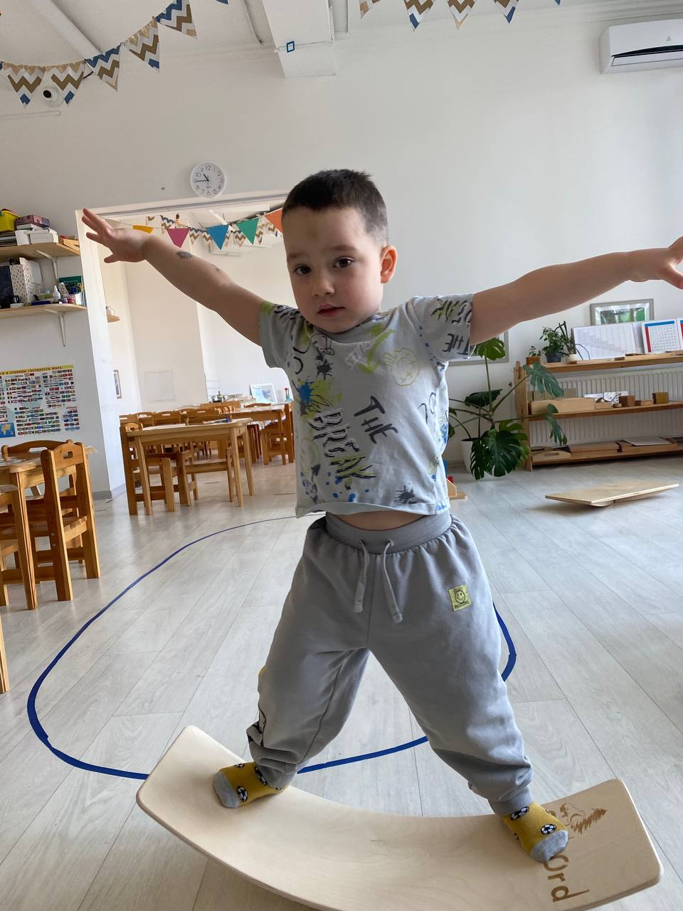
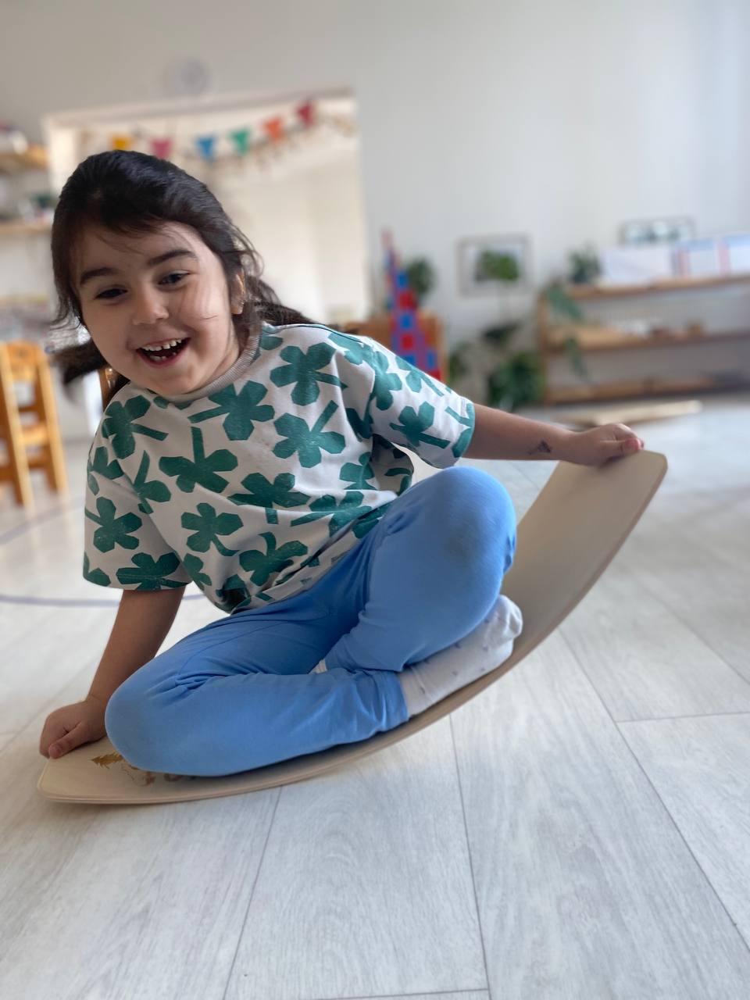
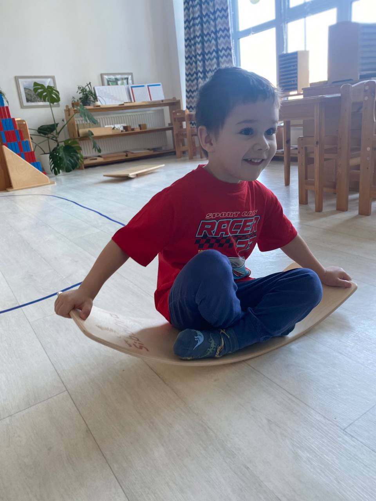
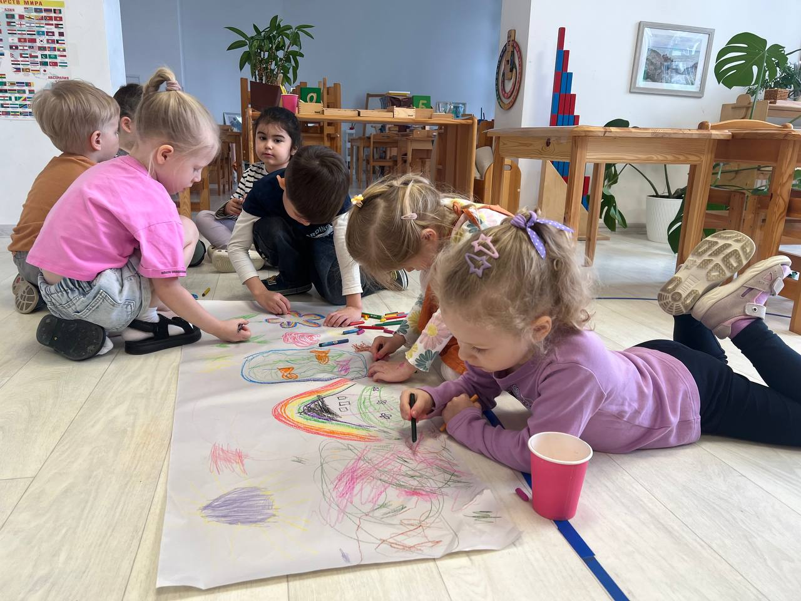
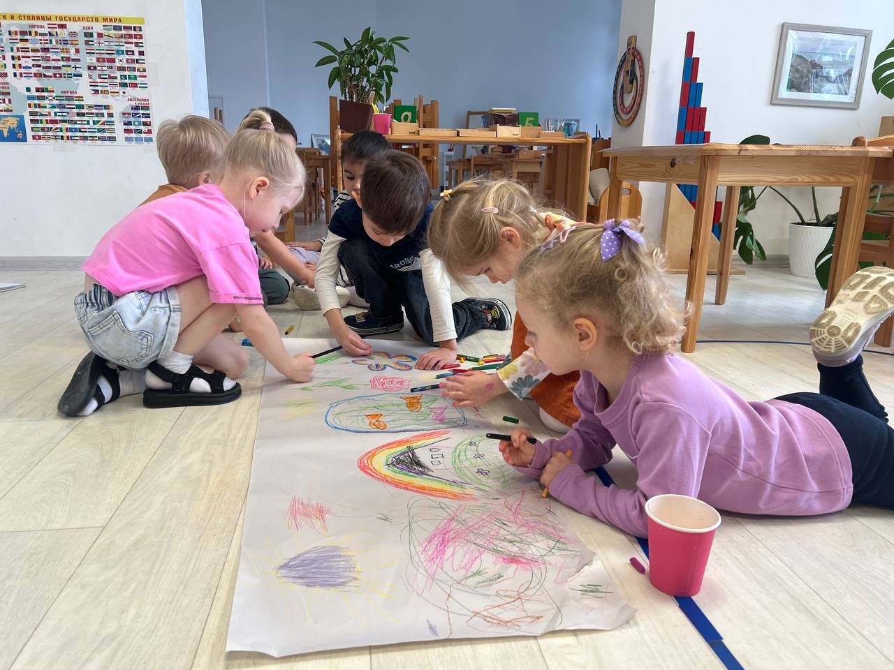

Мягкая адаптация
Ребенок привыкает к группе постепенно, без давления и спешки.

Детский сад, где ребенок каждый день учится выбирать, пробовать, заботиться о себе и спокойно расти в подготовленной среде.
Бережный старт
Ребенок привыкает к группе постепенно, без давления и спешки.
Дети выбирают занятия, а педагог помогает держать ритм и порядок.
Короткая обратная связь по дню, успехам, настроению и бытовым моментам.
Форматы дня

Утренний круг, Монтессори-блок, прогулки, питание, отдых и творческие занятия.

Подходит для адаптации и семей, которым нужен садик на первую половину дня.
Пригласим на встречу, покажем пространство и обсудим, как ребенку будет комфортнее начать.
Записаться








Подготовленная среда
День ребенка
График работы
В пятницу, 1 мая 2026, садик работает по обычному буднему графику.
Новости
Встречаемся на пляже «Ривьера»: вкусняшки, игры с воспитателями и спокойное утро для мам.
ПодробнееТак ребенок учится выбирать занятие, возвращать предметы на место и беречь порядок.
Начинаем мягко: короткие визиты, знакомый взрослый рядом и постепенное увеличение времени.
Контакты